Tinkering with the core R code is easier than it used to be, thanks to R Dev Container
Context
R Developers Day, organised by Heather Turner and Sharon Pileggi followed a very successful useR! 2024 in Salzburg, Austria. This was the opportunity to work alongside experienced programmers on contributions to base R.

The setting of Paris Lodron University of Salzburg (PLUS) is gorgeous, on the Sound of Music side of Salzburg, with views to the fortress across a field of wheat.
This post summarises what I learned about how to make changes in base R, compile and check the results.
Getting started
I recommend that you have a block of time (1-2 hours) to get up and running, because once you start you’ll want to keep tinkering with the base code for a while. And if you leave the work for a half hour or so, the session will time out and may error when you try to start it up again, at least this is what has been happening to me as I try to reconstruct the day’s efforts.
To get started with a fresh codespace:
- Point your browser to https://github.com/r-devel/r-dev-env
- Click on “Open in GitHub Codespaces”
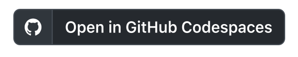
then “Create codespace”. This can take a few minutes to complete.
Now you want to get a local copy of the R source, into your container, and build it. The instructions on doing this are in the
docs,tutorials,building_r.rmdfile.
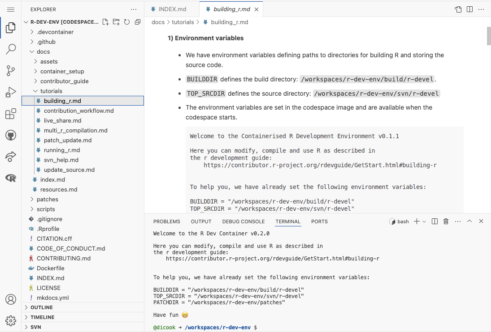
- Follow the instructions, from step 2 onwards, by cutting lines of code from the instructions and pasting into your TERMINAL window. This means doing this:
- svn checkout of the source
- download the recommended packages
- changing the build directory
- configuring the build
- then making
- Run the devel version of R! You can use the
which_Rcommand and chooser-develto set it.
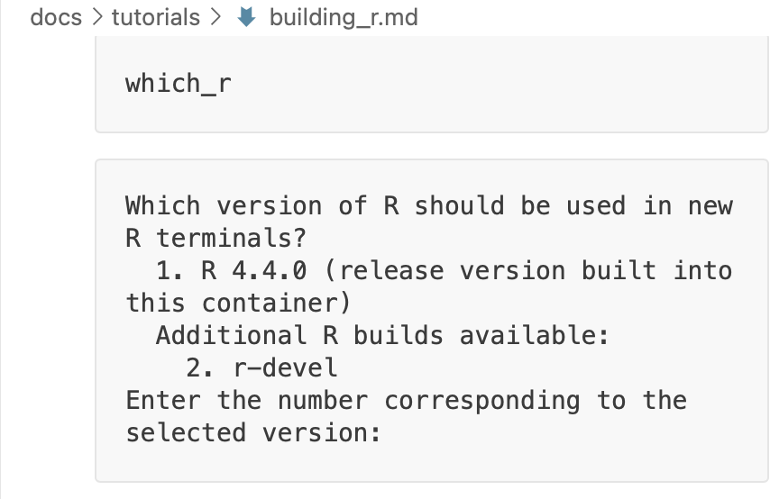
- To run R so that you get a graphics window, click the
R (not attached)on the bottom right of the window.
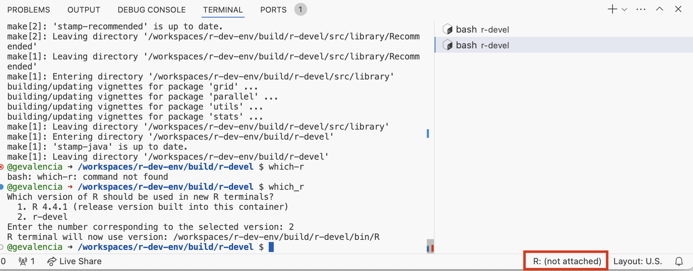
- The base code is in the
svn/srcdirectory
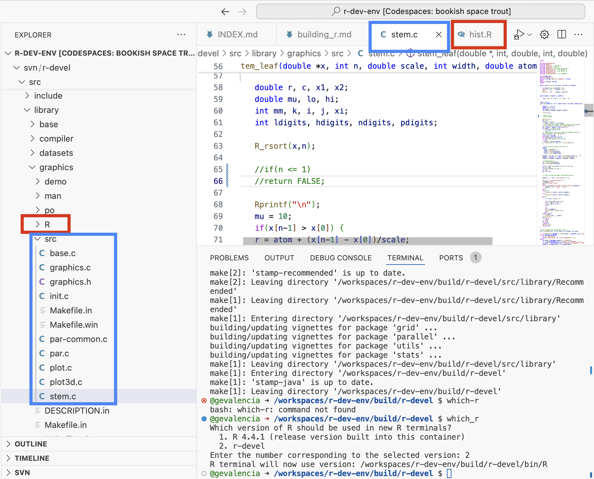
What I did: “Enhance” base graphics
Base graphics code is in the library/graphics directory.
Changing R code to create better histogram defaults
A good place to start is modifying base code that is directly written in R, such as the histogram function. It is in the file R/hist.R. You can open and edit this file.
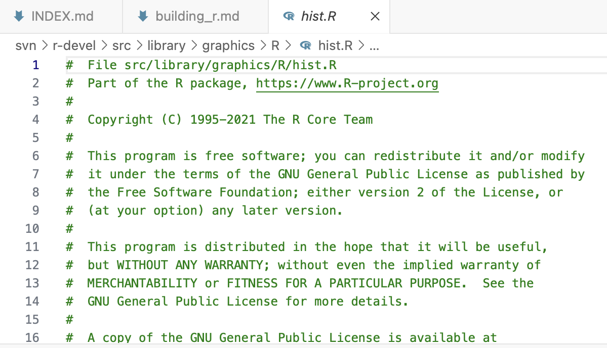
Make a change, like the default boundary to be white:
Then
makein the terminal window to build R againRestart R and check your work with
hist(runif(104))Before change
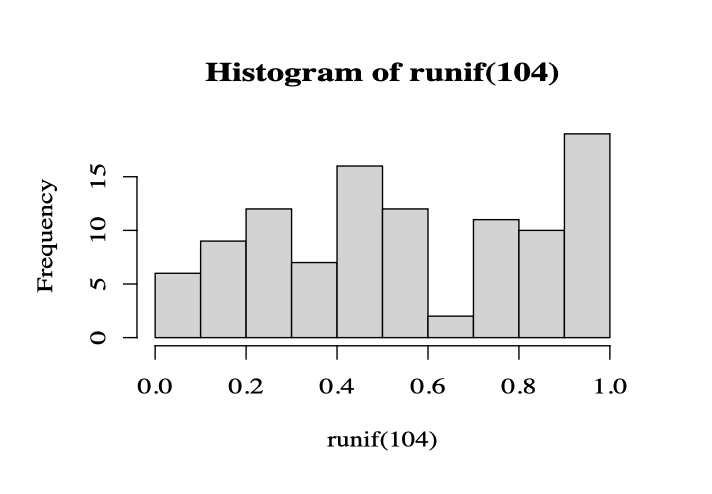
After change
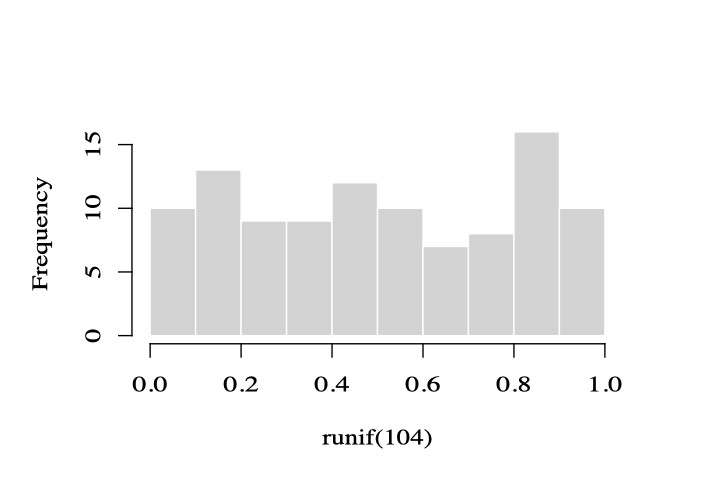
Changing C code to remove the one case dependency
The next step is to tackled changes in C code. Interestingly, although the histogram code is directly written in R, the stem and leaf code is in the C code base.
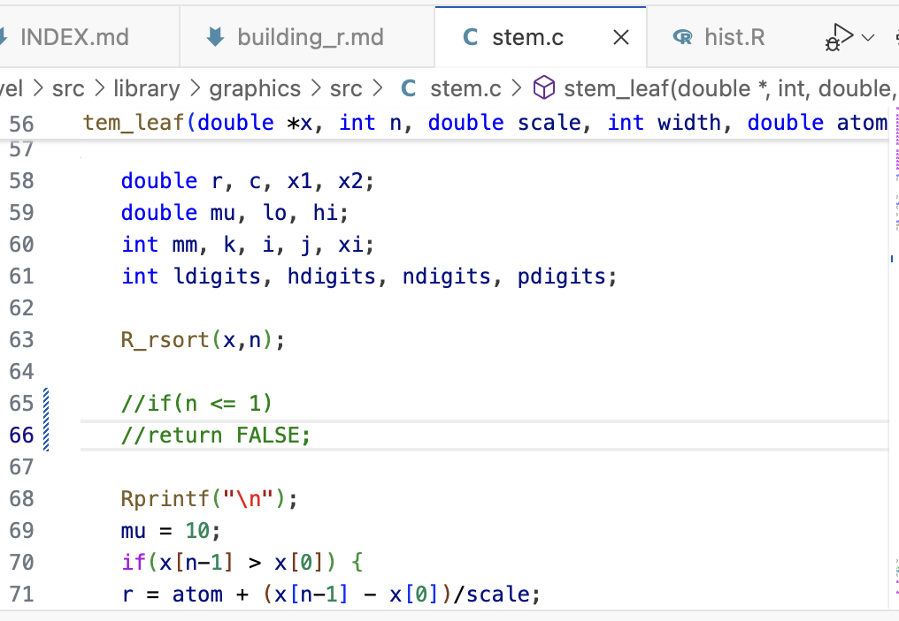
Editing this code is fairly straight forward, though, and doesn’t require much C knowledge.
This project arose from Ella Kaye’s presentation at useR! 2024 pointing to deficiencies in the current stem-and-leaf display. For example, if your data has only one observation there will be no result. The code has a line checking for the number of observations, and simply returns if n <= 1 (see the image above).
Commenting these lines out with // results in the stem-and-leaf displayed for a single observation.
Before change
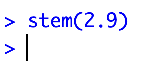
After change
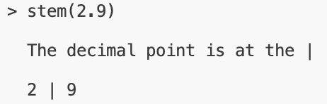
It is tempting to make many changes to the stem-and-leaf code for example, if the data is reasonably sized and the number of characters available on the line is less than the number of leaves in a stem, it will simply stop printing more characters and finish with +21 where the number indicates how many more characters should have been printed.
Anyway, who uses stem-and-leaf any more. Tukey had a gazillion varieties of them, but they are more useful when working with pencil and paper.
Where to go from here
Making changes to base R is much less intimidating that I realised, particularly with the R Dev Container developed by Atharva Shirdhankar with mentorship by Heather Turner, James Tripp, Iain Emsley.
This opens the possibility of reviewing, analysing and fixing bugs in code or documentation reported on R’s Bugzilla. This is a good opportunity to contribute back to the community, and for exercises or assignments in advanced programming classes. Any patch reported will get substantial scrutiny from an R Core member before it ias accepted. It was exciting to see several patches become part of the R base over the course of R Dev Day. I did not submit any patches of my base R graphics enhancements 🤪.
Warning: I quickly burned through my 60 hours per month of GitHub CodeSpaces. I don’t think that I was close to this amount of use, but maybe it happened by opening new codespaces trying to find the one I started with. This site will show the codespaces you have created, and allow creating new ones, and possibly whether you have remaining time on your monthly plan to keep playing.